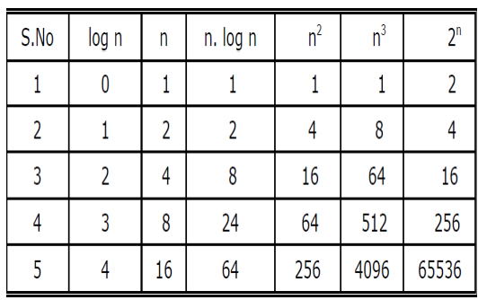
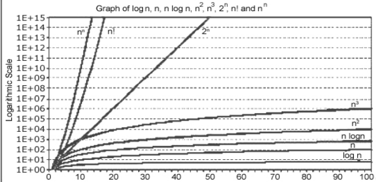

ANALYSIS OF ALGORITHMS
WHAT IS AN ALGORITHM?
• Algorithm is a sequence of well defined, simple, unambiguous and effective statements, which when executed sequentially will produce the desired result in finite amount of time.
ALGORITHM DESIGN STATERGIES
1. BRUTE FORCE - follow definition / try all possibilities.
2. DIVIDE AND CONQUER - break problem into distinct subproblems.
3. GREEDY APPROACH - repeatedly do what is best now
4. DYNAMIC PROGRAMMING - break problem into overlapping subproblems.
5. BACKTRACKING - It tries out different sequences of decisions until we find one that "works.“
6. BRANCH & BOUND - Systematic method for solving optimization problems
PROPERTIES OF ALGORITHM
1. INPUT - An algorithm takes zero or more inputs.
2. OUTPUT - An algorithm results in one or more outputs.
3. All operations can be carried out in a finite amount of time
4. An algorithm should be efficient and flexible
5. FINITENESS - An algorithm must terminate after a finite number of steps.
6. DEFINITENESS - Every instruction must be clear and unambiguous.
7. EFFECTIVENESS - Every instruction must be sufficiently basic that it can in principle be carried out by a person using only pencil and paper. It is not enough that each operation be definite, but it must also be feasible.
ANALYSIS OF ALGORITHM
The field of computer science, which studies efficiency of algorithms, is known as analysis of algorithms.
Programs derived from two algorithms for solving the same problem should both be
▪ Machine independent (Assumes RAM model)
▪ Language independent
▪ Environment independent (load on the system,...)
▪ Realistic
PERFORMANCE OF PROGRAN
The performance of a program is the amount resources like, computer memory and time needed to run a program.
The performance of most of the algorithms are measures using two metrics:
1. Space Complexity
2. Time Complexity
SPACE COMPLEXITY
Space Complexity -The space complexity of a program is the amount of memory it needs to run to completion.
The space need by a program has the following components:
1. Instruction space: Instruction space is the space needed to store the compiled version of the program instructions.
2. Data space: Data space is the space needed to store all constant and variable values.
3. Environment stack space: The environment stack is used to save information needed to resume execution of partially completed functions.
TIME COMPLEXITY
• Time Complexity - The time needed by an algorithm expressed as a function of the size of a problem is called the TIME COMPLEXITY of the algorithm.
• The time complexity of a program is the amount of computer time it needs to run to completion.
• The behavior of the complexity as size increases is called the asymptotic time complexity.
ON WHAT DOES TIME COMPLEXITY DEPEND ON:
Depends on instructions execution
– Instructions: Dependent or Independent
Instruction is independent on input size is said to be constant time.
– EX FOR NOT DEPENDING: int i; // doesn’t depend on input size;
-EX FOR DEPENDING: i < n // it may depend on input size (n).
FORMULA FOR TIME COMPLEXITY:
T(P)= C + tp = compile time + Running time
T(P) - is the running time of a program
Fixed Part: C-compile time independent of the instance.
tp -variable part, runtime depends on problem instance.
FASTER ALGO VS FASTER CPU
• A faster algorithm running on a slower machine will always win for large enough instances
FOR EX:
• Suppose algorithm S1 sorts n keys in 2n square instructions.
• Suppose computer C1 executes 1 billion instruc/sec
• When n = 1 million, takes 2000 sec
• Suppose algorithm S2 sorts n keys in 50nlog2n instructions
• Suppose computer C2 executes 10 million instruc/sec
• When n = 1 million, takes 100 sec
HOW TO FIND TIME COMPLEXITY?
It depends on factors such as input, programming language and runtime, coding skill, compiler, operating system, and hardware.
LINEAR LOOP
EX: for(i=0;i<100;i++)
statement block;
• 100-times
• If N=100,
• Then time complexity is N
LOGARITHMIC LOOP
EX: for(i=1;i<1000; i=i*2)
statement block;
• 10-times
• If N=100,
• Then time complexity is log(N)
NESTED LOOP
EX: M=10,N=5;
for(i=0;i less than M);
DONT KNOW SIR
COMLEXITY OF ALGORITHMS
Algorithms can be evaluated by a variety of criteria. Most often we shall be interested in the rate of growth of the time or space required to solve larger and larger instances of a problem.
We will associate with the problem an integer, called the size of the problem, which is a measure of the quantity of input data.
The complexity function f(n) for certain cases are:
1. Best Case : The minimum possible value of f(n) is called the best case.
2. Average Case : The expected value of f(n).
3. Worst Case : The maximum value of f(n) for any key possible input.
ASYMPTOTIC AMALYSIS
The various asymptotic notations are:
1. O ( Big Oh notation )
2. Ω ( Big Omega notation )
3. θ ( Theta notation )
BIG-OH NOTATION
It is used to define the upper bound of a algorithm in terms of Time Complexity.
It indicates the Asymptotic upper bound by an algorithm for all input values.
Definition:
– Given function f(n) and g(n) , we say that f(n) is O(g(n)) if there are exist positive constants c and n0 such that f(n) ≤ cg(n) for n ≥ n0
RULES FOR FINDING BIG-OH
1. If f(n) is a polynomial of degree d,then f(n) is O(nd), i.e,
– Drop lowest term
– Drop constant factors
2. Use the simplest possible class of
function
– Say “2n is O(n)” instead of “2n is O(n2)”
3. Use the simplest expression of the class
– Say “3n+5 is O(n)” instead of
“3n+5 is O(3n)”
4. If T1(n) = O(f(n)) and T2(n) = O(g(n)),then
– T1(n) + T2(n) = max( O(f(n)), O(g(n))),
– T1(n) * T2(n) = O(f(n) * g(n))
BIG-OH EXAMPLE
• Consider the following f(n) and g(n)...
f(n) = 3n + 2
g(n) = n
• If we want to represent f(n) as O(g(n)) then it must satisfy f(n) <= c g(n) for all values of c > 0 and n0>= 1
f(n) <= c g(n)
⇒3n + 2 <= c n
• Above condition is always TRUE for all values if c = 4 and n >= 2.
By using Big - Oh notation we can represent the time complexity as follows...
3n + 2 = O(n)
• 5n2 = O(n2), c = 5, n0 >=1
BIG-OMEGA NOTATION
Big - Omega notation is used to define the lower bound of an algorithm in terms of Time Complexity. Always indicates the minimum time required by an algorithm for all input values.
Definition:
• Given function f(n) and g(n) , we say that f(n) is Ω(g(n))
if there are exist positive constants c and n0 such that
f(n) ≥ cg(n) for all n ≥ n0.
BIG-OMEGA EXAMPLE
f(n) = 10n2 + 4n + 2
Let us take g(n) = n2
c = 10 & n0> = 0
Let us check the above condition
10n2> + 4n + 2 ≥ 10n2
for all n ≥ 0
The condition is satisfied. Hence f(n) = Ω(n2>).
THETA NOTATION
• The theta notation is used when the function f(n) can be bounded by both from above and below the same function g(n).
Definition: f(n) = θ (g(n)), if there exist positive constants c1, c2, and n0 such that 0 ≤ c1 g(n)≤ f (n) ≤c2 g(n) for all n ≥ n0 }
THETA EXAMPLE
• 5n2> is θ(n2)
f(n) = 5n2, g(n) = n2
It is true for the values: c1= 5, c2= 6 and n0 >= 1
Note: f(n) is θ(g(n)) if it is Ω(n2) and O(n2).
MASTER THEOREM
The Master Theorem applies to recurrences of the following form:
T (n) = aT (𝒏/𝒃) + f(n)
where a ≥ 1 and b > 1 are constants and f(n) is an asymptotically positive function.
There are 3 cases:
1. If f(n) = Θ (𝑛𝑙𝑜gb𝑎−𝜖) for some constant ↋ > 0, then T (n) = Θ (𝑛𝑙𝑜gb𝑎−𝜖).
2. If f(n) = Θ (𝑛𝑙𝑜g𝑏𝑎𝑙𝑜𝑔k>n),with k ≥ 0, then T(n) = Θ(𝑛𝑙𝑜gb𝑎𝑙𝑜𝑔𝑘+1n)
3. If f(n) = Ω (𝑛𝑙𝑜gb𝑎+𝜖) with ↋ > 0, and f(n) satisfies the regularity condition, then
T(n) = Θ(f(n)).
Regularity condition: a.f(𝒏/𝒃) ≤ c.f(n) for some constant c < 1 and all sufficiently large n.
MASTER THEOREM EXAMPLE
6. T (n) = 16T (n/4) + n
Solution :
case-1 :
T(n) = Θ(n2)
NUMERICAL COMPARISION OF DIFFERENT ALGO

COMPARISION OF DIFFERENT ALGO

BACK TO TOP